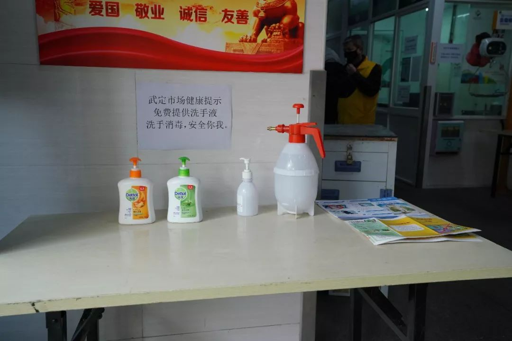
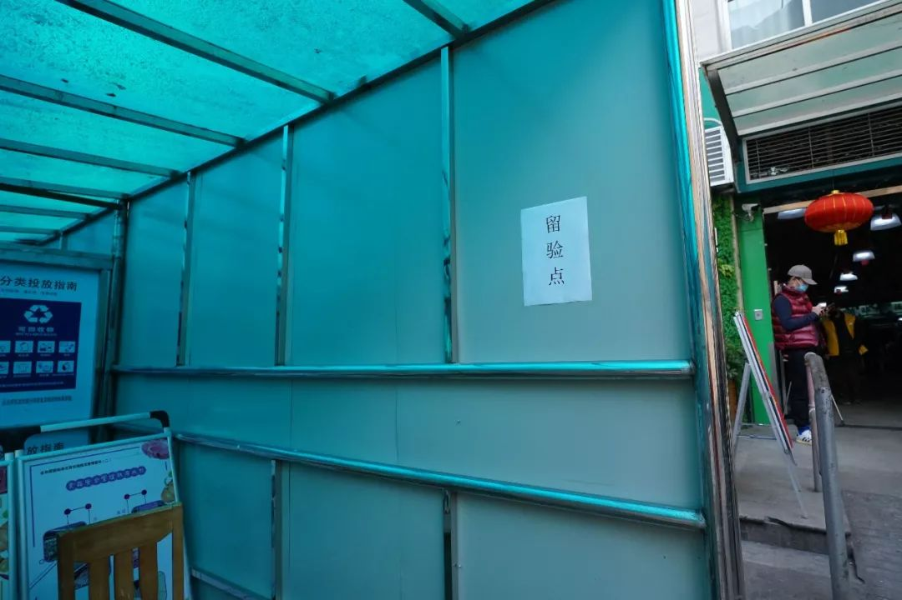
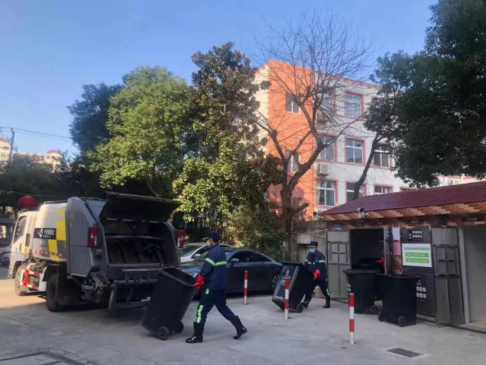
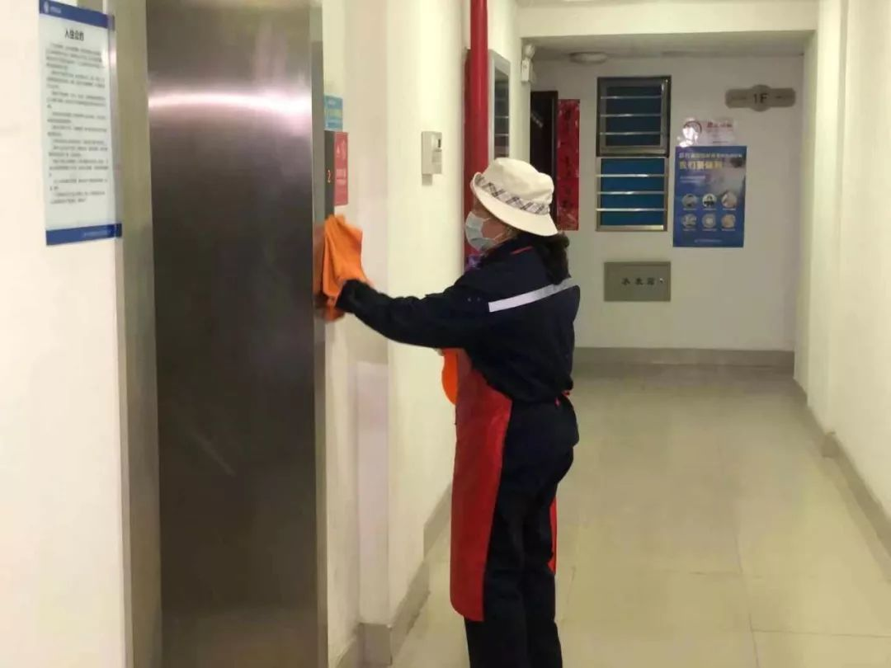
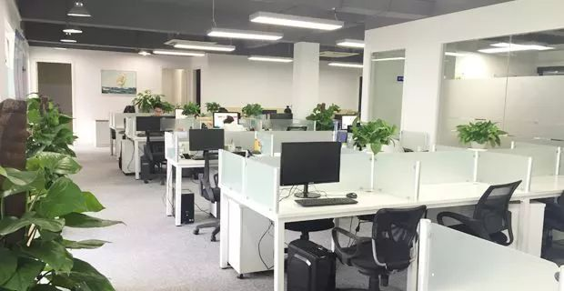

「 隔离日记 」 20200202
原文链接 备份链接 播放音乐 | 阅读效果更佳 感谢 | 您对霍超LEGAL的关注、阅读与分享 如今我每天蜗居在隔离房间里，都会定时看一些疫情相关的新闻，笑着看的时候看看看着就哭了；哭着看的时候，看着看着就笑 …

虽然每天尽量不出门，但买汏烧省不了，现在菜场蔬菜供应充足了，但买菜安全，有时候还是会担心。好在现在进菜场就要测量体温，不戴口罩不让进，感觉比较安全，摊主也会鼓励我们用手机扫码支付，减少大家支付现金时的接触。
记者 | 应 琛
国务院应对肺炎疫情联防联控机制办公室提出，春节期间是“大隔离、大消毒”最佳窗口期。
1月31日，静安区新冠肺炎防控办消毒组、区爱卫办积极落实市肺炎防控领导小组通知要求，充分发挥爱国卫生运动在基层的组织发动优势，分别召集12个相关部门、12家区属集团企业、14个街镇，召开全区各类场所环境整治和预防性消毒工作紧急会议，广泛组织爱卫会各成员单位做好环境大扫除，落实以环境清洁和开窗通风为主的卫生措施，并进行科学、必要、适度的消毒处理。
静安区卫生健康委副主任、区爱卫办主任钟岭表示，区爱卫会各成员单位全面落实联防联控措施，构筑群防群治的严密防线，推进关口前移，降低传播风险。

武定菜市场内 摄影 |沈琳
仅仅过了一天，除了原来人流比较密集的道口、火车站等交通枢纽外，那些存在交叉感染的风险，市民经常接触的公共空间也有了新的变化。
01
集贸市场
居民密切接触的集贸市场是关口前移的第一站。
2月1日下午3点多，静安区武定菜市场门口，工作人员手持体温测量仪正在对每一个进入菜市场的市民测量体温。

摄影 | 沈琳
一旁的台面上，整齐地排列着洗手液供市民免费取用。

摄影 | 沈琳
而菜市场内，一台扫地车正在对地面进行消毒清理。

摄影 | 沈琳
在现场，记者还看到，武定菜市场外首设“留验点”，一旦有体温超过37.3度的居民，先会被隔离在此，随即通知相关部门进行后续转运，以及做进一步的检查。
“像菜市场这样和人们生活密切相关的地方，一定要高度重视，让可能发生的传播风险控制在较小的范围。”静安区卫健委、区爱卫办李彦玲科长告诉《新民周刊》记者。
据武定菜市场负责人胡禹介绍，1月31日接到区爱卫办的指导意见后，他们立刻组织人手在菜市场内寻找符合条件的地点，“这个点不能设置在室内，要通风”。最后，他们将原来堆放杂物的一处空间设置成了现在“留验点”。而这样的“留验点”日后有望在全区其他有条件的菜市场推广。

摄影 | 沈琳
此外，菜场积极落实各农贸市场全面开展环境清洁和预防性消毒工作。除了菜场的管理者、经营户之外，所有市民都必须佩戴口罩才能都进入。
开开集团副总经理、东亚公司党总支书记李喜军告诉记者，目前菜场开市前和结束后每天至少2次进行环境清洁和预防性消毒工作，“另外，全天不间断地会有扫地车对地面进行消毒”。
除了加强宣传之外，菜市场已要求摊主加强日常清洁卫生，及时清运垃圾，每天营运结束后必须进行预防性消毒。“对台面、墙面、地面等易污染物品采用‘三块毛巾消毒’，第一块毛巾常规清洁，第二块毛巾浸湿消毒剂后进行擦拭或直接喷洒，第三块毛巾在至少半小时后再进行擦拭除去消毒剂。”李喜军介绍道。

摄影 | 沈琳
在市民陈阿姨看来，她的安全感正是在这样的防控中增加的。陈阿姨告诉记者：“虽然每天尽量不出门，但买汏烧省不了，现在菜场蔬菜供应充足了，但买菜安全，有时候还是会担心。好在现在进菜场就要测量体温，不戴口罩不让进，感觉比较安全，摊主也会鼓励我们用手机扫码支付，减少大家支付现金时的接触。”
02
垃圾厢房、公厕、公租房
同样地，垃圾厢房、公厕、公租房等消毒问题，也是市民比较关注的地点。
“如果这些市民目前仍会接触到的公共环境的清洁和预防性消毒做好了，其实很大程度上就能有效切断公共传播的途径，降低社区传播风险。”李彦玲表示。
2月2日下午，天目西路街道华舟小区垃圾厢房前，一辆专业的干垃圾清运车正在作业，清空垃圾桶后，工作人员拿出了喷壶，对清运车、周边的地方进行喷洒消毒。


摄影 | 应琛
此时，一旁身背消毒剂的小区物业保洁人员已经开始对垃圾桶和垃圾房进行喷洒消毒。

摄影 | 应琛
过了一会儿，又有两名身背消毒剂，穿着制服的保洁人员来到此处进行消毒。在记者的询问下，他们是街道聘请的第三方专业人员，正在进行每天一次的公共区域专业消毒。

摄影 | 应琛
天目西路街道社区管理办、爱卫办主任汪建国告诉《新民周刊》，1月31日区里的会议过后，街道立即展开工作部署，制定了计划并明确了责任分工。
“在消毒方面，街道主要是做了四个方面的工作。第一是要求小区的物业每天不少于两次对居民楼的电梯、垃圾厢房等公共卫生点位进行消毒。第二是进行专业消毒，利用街道的消毒站，以地铁、火车站为界限，南北分成两个小组，每天是同步对辖区内所有的小区的公共通道、垃圾厢房进行一次彻底的消毒。”汪建国向记者介绍道，“第三开展全面覆盖消毒，这是街道对一些老旧小区进行的‘托底消毒’，每天不少于一次。第四就是指导消毒，加强对辖区内商务楼的工作人员和居民的宣传教育。”
上海静安城市发展集团副总经理张乐平则在接受《新民周刊》采访时表示，在区内一些隔离点的垃圾厢房操作时，集团不仅要求工作人员佩戴口罩和防护手套，还会要求穿上防护服。
而对辖区内的公厕消毒方面，张乐平表示，除了每天早中晚至少三次的全面消毒之外，现在所有公厕均采取“跟踪式消毒”，有人使用之后，保洁员立即会对门把手、台盆、水龙头等接触的区域进行消毒。

摄影 | 应琛
以华舟小区对面的公厕为例，这里的开放时间是5点到22点，保洁人员实行两班倒。原本这里每天的人流量在1500—2000人次，现在每天在500人左右。保洁员工作期间，全程要求佩戴口罩和防护手套。此外记者在现场看到，公厕内还打开了风扇加强通风。
离开华舟小区，记者又来到了毛家弄公租房，这里的部分租户为静安区医护人员。为保护好医护人员的后防线，物业严格按照区爱卫办要求做好环境整洁和预防性消毒工作。
据张乐平介绍，一是进一步强化人员管控，公租房项目不再接受访客入内；二是采取集中式项目管家模式，开展24小时出入租户体温测量及上岗员工每天体温测量，并做好登记工作，如发现发热情况，立即安排就医，上报并进行跟踪；三是增加公共空间、楼道、电梯等场所保洁工作的频次，并按要求做好消毒工作，全方位减少病毒存在的可能，全力保障租户的健康。

摄影 | 应琛
“对公租房的公共区域的消毒，从原来的一周一次变成每天三四次，像门厅、电梯间这种使用比较频繁的地方，我们的要求是4次消毒。然后像消防通道、公共洗衣房、晾衣服的天井这些以前会忽略的地方，基本上也要保持3次消毒。我们争取是做到不放过任何一个卫生死角。所有消毒剂都是根据规范配比来做的。”张乐平表示。
此外，为了做好全区公租房预防性消毒工作，城发集团闸北公租房公司按照区卫生健康委、区爱卫办统一部署，对全区所有公租房629名租户开展全面排摸，每日上门询问或电话询问，确保信息全面了解掌握，有效落实“对进入上海的人员一律测量体温、对来自重点地区的人员一律实施医学观察、对其他外来地区人员一律申报信息给相关部门”的工作要求。
03
办公场所
明天（2月3日）即将迎来部分企业的返工高峰，李彦玲表示，区里在1月31日的会上也已经做好了相应的部署，“办公楼宇会是下一步防控重点。我们在未来几天可能会到一些办公楼宇进行重点督查”。
“事实上，上海市疾控中心很早就下发了十类场所的消毒指导。而市民最关心的就是居住场所和一些会接触到的公共场所。”李彦玲说，静安区相关部门如此细致全面的工作，一方面希望能够踩准每一个点，坚决杜绝防控漏洞的出现；而另一方面则希望大家能够科学地进行必要的消毒，不要过度消毒。

图片来源于网络
除了勤洗手之外，例如，在办公室能够以通风为主，尽量避免开空调；在家也要经常开窗通风。
“如果家里没有病患、密切接触者或者需要隔离的病人，我们不主张每天用消毒液擦拭，当然每天清扫和清洁是需要的。像现在这个季节，每周一次消毒就够了。但针对厕所，以及经常洗手的洗手台可以每天用低浓度的消毒液进行消毒，在半小时之后一定要用清水擦一下，去残留不对人体有刺激，以及减轻消毒剂的腐蚀。”静安区疾控中心工作人员提醒。
征集令
《新民周刊》现面向全国征集新冠肺炎采访对象和真实故事：
如果你是参与抗击新冠肺炎疫情的医护人员或其家属，我们希望聆听你的“战疫”故事，也希望传达你的诉求。
如果你是确诊、疑似患者本人或家属，我们希望了解你和家人如何“抗疫”的过程，让外界了解你的真实经历。
如果你是疫情严重地区的普通市民，我们希望展现你的乐观，并倾听你所需的帮助。
如果你是公共服务人员或各类捐助者，我们希望看到你的“最美逆行”，记录下你的无私。
……
抗击新冠肺炎疫情，我们诚征对疫情了解的社会各界人士，提供相关线索，说出你的故事，让我们用新闻留存这一切。
《新民周刊》新冠肺炎线索征集值班编辑联系方式（添加时请简要自我介绍）：
周一：应 琛 微信号：paulineying0127
周二：金 姬 微信号：gepetta
周三：黄 祺 微信号：wxid_bf5mudid7oz322
周四：周 洁 微信号：asyouasyou
周五：孔冰欣 微信号：kbx875055141
周六：吴 雪 微信号：shyshine1105
周日：姜浩峰 微信号：jianggeladandong
新闻是历史的底稿，你们是历史的见证者。期待你的故事、你的线索！

▼
大家还都在看这些
▼
转载请在评论区留言，获得授权！
转载时，须注明作者、出处和微信号


原文链接 备份链接 播放音乐 | 阅读效果更佳 感谢 | 您对霍超LEGAL的关注、阅读与分享 如今我每天蜗居在隔离房间里，都会定时看一些疫情相关的新闻，笑着看的时候看看看着就哭了；哭着看的时候，看着看着就笑 …
原文链接 备份链接 《战疫口述记》，是燃财经在新型冠状病毒肺炎期间推出的特别栏目，记录疫情亲历者的观察和感受。本文为第6篇，查看前5篇请点击《我和公司都快熬不住了》《节后返京，太太太南了》《我的“流浪”春节》《农村这样防肺炎》《我在武汉 …
原文链接 备份链接 8个关键词，构成了2020年1月这场牵涉全国疫情的一个侧面——一个个普通人，是如何度过了这个特殊的一月。 这次月度总结，我们决定记录一些疫情中令人啼笑皆非的小新闻，因为，这些看似微不足道的切片，构成了每个人在大事件中的 …
原文链接 备份链接 “我的酒店当时空着，我就想，拿出来给医护人员住，想法很简单。” 全文2514字，阅读约需5分钟 为给奋斗在抗击疫情一线的医护人员提供免费和方便的住宿，除夕夜（1月24日），数百位武汉酒店业内人士自发组建武汉医护酒店支 …
原文链接 备份链接 最近几天广州的地铁人流量约为单日100万人，发热率为十万分之一点七到三点五。也就是说，每天在地铁内监测到的发热病人在17人到35人之间，情况相对稳定 “如果未来几天，外地返穗人口增加，那发热人员增加的风险肯定会加 …